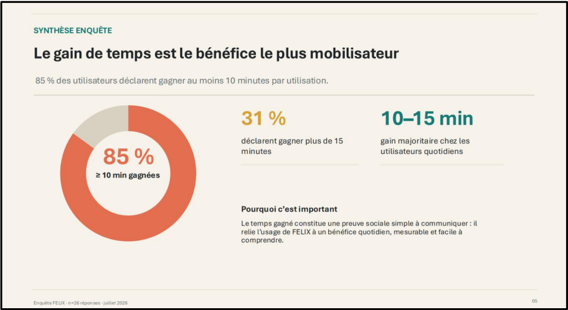
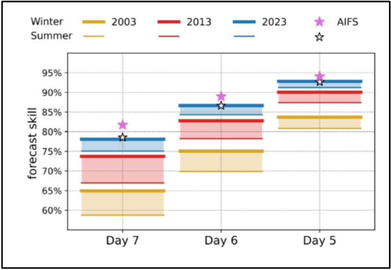
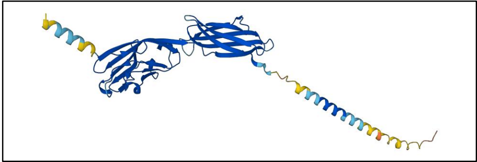
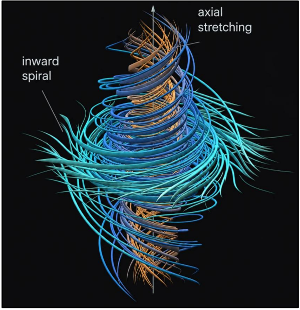

Cette première partie établit dans quel sens l’intelligence artificielle peut améliorer la performance. Elle commence par définir la performance comme un ensemble de dimensions parfois complémentaires, parfois en tension, puis montre que l’IA déplace progressivement l’attente de performance vers la formulation, la vérification, la sécurisation et le discernement. Trois régimes sont ensuite distingués : accélérer des tâches déjà maîtrisées, rendre accessibles des résultats auparavant hors d’atteinte et personnaliser une réponse selon un individu ou un contexte. Cette progression conduit d’un gain d’efficience potentiellement substituable à une coopération plus étroite entre l’utilisateur et le système. La reconfiguration de l’effort ainsi mise en évidence préparera l’étude des transformations de l’apprentissage dans la partie suivante.
1.1 Qu'est-ce que la performance ?
L’IA ne peut être qualifiée de levier de performance qu’à condition de préciser ce que signifie « performer ». Une mesure limitée à la vitesse ou au volume laisserait de côté la qualité, la fiabilité, la dimension collective et les effets sociétaux de l’activité. Cette section définit donc les principales dimensions de la performance, puis examine le déplacement de l’attente humaine lorsque certaines opérations deviennent délégables. Elle pose ainsi la grille de lecture qui permettra de comparer les trois régimes étudiés ensuite : accélération, franchissement de seuils et personnalisation. La définition étant établie, il sera possible d’observer comment ces régimes se manifestent dans des situations concrètes.
a) Les dimensions de la performance
Avant de voir comment l'intelligence artificielle transforme la performance, il faut d'abord définir ce mot. On l'emploie comme s'il désignait une seule chose, facile à mesurer. En réalité, la performance regroupe plusieurs dimensions différentes, qui ne se confondent pas et qui peuvent même s'opposer entre elles.
- L'efficacité, atteindre l'objectif fixé. Le critère est binaire : la cible est atteinte ou elle ne l'est pas. Le coût n'entre pas en ligne de compte.
- L'efficience, atteindre ce même objectif en consommant moins de ressources : temps, argent, énergie, effort. C'est le registre du rendement, faire le plus avec le moins.
- La qualité, atteindre l'objectif mieux : plus de précision, moins d'erreurs, plus de fiabilité. Cette dimension est partiellement indépendante des deux précédentes : une performance peut être efficace et efficiente tout en n’étant pas qualitative.
- La performance sociale et humaine, Elle ne porte pas sur le rapport entre un acteur et une tâche, mais sur la dimension collective de l'activité : qualité des relations de travail, engagement, transmission des savoirs, sens du travail. C'est la performance qui est difficilement mesurable.
- La performance sociétale et environnementale, l'empreinte de l'activité : impact écologique, l'éthique et la contribution à l'intérêt général.
- La performance créative ou artistique, la valeur d'une production tient à son originalité, sa charge expressive et à l'engagement de son auteur. C'est un critère subjectif.
Deux enseignements se dégagent de ce panorama.
Le premier est que ces dimensions sont en tension. Optimiser l'efficience peut dégrader la qualité ; automatiser pour gagner sur la qualité et l’efficience peut appauvrir la performance sociale. Toute évaluation suppose donc un arbitrage implicite entre dimensions.
Le second, qui structure toute cette première partie, est que l'IA agit sur dimensions
- Des gains massifs et immédiatement mesurables sur l'efficience, (1.2 L'IA accélère : les gains d'efficience sur des tâches maîtrisées) ;
- Des gains considérables sur certaines dimensions de la qualité, notamment lorsque la précision requise dépasse les capacités humaines de traitement documenté dans la partie (1.3 L'IA rend possible : le franchissement de seuils de capacité) ;
- Des gains de précisions et de personnalisation de l’information (1.4 L’IA personnalise : de la moyenne au sur-mesure)
- Une position beaucoup plus ambivalente sur la performance sociale et humaine, où ses effets sont différés et difficilement quantifiables (Partie III, Limites, risques et cohabitation humain-IA).
Cette dernière observation appelle une autre question. Si l'IA devient très performante sur certaines dimensions, que reste-t-il à attendre de l'humain ? L'hypothèse que nous allons défendre est que l'attente ne disparaît pas, elle se déplace.
Référence :
Larousse, « Performance », Dictionnaire de français, https://www.larousse.fr/dictionnaires/francais/performance/59512#59151
b) L'IA déplace l'attente de performance
Il faut partir d'un constat simple : lorsqu'une machine devient très performante sur un registre, ce registre cesse progressivement d'être ce que l'on valorise chez l'humain. Non parce qu'il perdrait toute utilité, mais parce qu'il n'est plus rare et l'attente de performance se porte toujours sur ce qui est rare, difficile, non délégable.
Mon expérience au Crédit Agricole illustre ce mouvement. À mon arrivée il y a trois ans, l'objectif principal de l'équipe était de mettre à jour les données du mois dans les délais : une personne consacrait environ quinze jours au traitement semi-automatique de ces données. La régularité de la production constituait le critère de performance. Trois ans plus tard, l'essentiel de ces processus est automatisé, et l'arrivée d'outils d'assistance au code comme GitHub Copilot a encore accru cette efficacité. Ce qui frappe n'est pas seulement le gain de temps : c'est que la mise à jour dans les délais a cessé d'être ce sur quoi nous étions attendus. Elle est devenue un acquis, non un résultat. Ce que l'on attend désormais de nous relève de la compréhension du besoin, de la saisie du contexte global, de la fiabilisation de la donnée et de la communication autour d'elle : expliquer les variations, restituer les situations qu'elles traduisent.
Ce qui devient partiellement délégable
Ce que l'on attendait hier d'un professionnel relevait pour une large part de l'exécution : être rapide, produire du volume, maîtriser une technique. Ces qualités constituaient un capital professionnel, souvent long à acquérir. Elles étaient un marqueur de compétence parce qu'elles étaient coûteuses.
¹Autor y voit une perspective ambitieuse : cette dynamique pourrait démocratiser l'accès à des emplois qualifiés aujourd'hui réservés aux diplômés. Mais il précise que rien n'est automatique, cela suppose un effort délibéré de formation et de conception des outils.
²Fabrice Popineau documente ce même nivellement par des résultats empiriques. « Brynjolfsson et al. (2023 ) », sur 5 179 agents de support client, mesurent un gain moyen de productivité de 14 %, mais ce chiffre masque une forte hétérogénéité : 34 % pour les novices, aucun effet pour les agents déjà expérimentés.
Popineau en tire une idée transposable au travail : dès lors que « la production individuelle d'artefacts ne signale plus de manière fiable la compétence de leur auteur, la fonction de signalement migre vers ce que les artefacts ne peuvent plus établir seuls ». Ce qui atteste la compétence n'est plus le livrable, mais ce que le livrable ne prouve plus.
Vers quoi l'attente se déplace
Cinq registres concentrent alors l'exigence.
La justesse. Savoir si le résultat est correct, pertinent, adapté au contexte réel. Dans mon activité, cela s'appelle la fiabilisation de la donnée, vérifier qu'un chiffre produit automatiquement est cohérent avec ce que l'on sait par ailleurs de l'activité.
La responsabilité. Assumer la décision et en répondre. C'est ici que la question de la légitimité prend tout son sens : même performante, une machine ne peut être tenue pour responsable.
La sécurisation. Détecter l'erreur, l'anomalie, le risque, y compris quand la machine est confiante. Popineau signale ici une limite importante à l'effet niveleur : selon Dell'Acqua et al. (2023), lorsque les tâches dépassent la frontière de compétence de l'outil, le tableau s'inverse. Des consultants du BCG équipés d'IA étaient 19 points de pourcentage moins susceptibles de produire la bonne réponse sur une tâche complexe hors des capacités de l'outil, que leurs collègues sans assistance. Popineau parle d'un risque d'« homogénéisation vers une erreur convaincante ». Un outil qui échoue de manière plausible exige une vigilance plus grande qu'un outil qui échoue visiblement.
Le discernement. Arbitrer entre des options que la machine peut proposer mais pas trancher. Dès lors que plusieurs solutions sont techniquement acceptables, le choix ne relève plus du calcul mais de la hiérarchisation de valeurs, de contraintes et d'enjeux qui ne figurent pas dans les données.
La relation. La confiance, l'écoute, la négociation, l'accompagnement. C'est ce que recouvre, dans mon expérience, l'exigence de communication autour de la donnée : un chiffre juste mais non expliqué ne produit aucune décision. On rejoint ici la performance sociale et humaine identifiée plus haut.
La thèse
De là découle la thèse que ce mémoire entend défendre : l'IA ne supprime pas les limites de la performance humaine, elle les déplace.
Le professionnel n'est pas libéré de toute exigence ; il est soumis à une exigence différente, plus difficile à acquérir et à évaluer. Il est significatif que mon équipe soit passée d'un critère parfaitement mesurable, la donnée est-elle à jour le 15 du mois ? à des critères plus difficilement mesurables : la variation a-t-elle été correctement expliquée ?
Deux conséquences
La montée en abstraction du travail. Moins d'exécution, plus de formulation du problème et de validation, un mouvement ambivalent qui enrichit le travail mais en élève le seuil d'entrée. Cette ambivalence met en tension nos deux sources : là où Autor voit une chance de démocratisation, Popineau note que déplacer l'exigence vers le jugement risque de rouvrir les inégalités que l'IA semblait combler, au bénéfice de ceux qui disposent déjà du capital cognitif nécessaire.
Le déplacement du goulot d'étranglement. Lorsqu'une tâche cesse d'être limitante, la contrainte migre, de la production vers la décision et la vérification. Dans mon métier de data analyst le goulot était situé sur la production, le développement ; maintenant il se déplace peu à peu vers la justesse, la responsabilité, la sécurisation, le discernement et la relation qui tourne autour de la donnée.
Articulation
L’IA ne rend pas certaines compétences obsolètes ; elle en transforme la fonction. Des savoirs autrefois mobilisés pour exécuter une tâche peuvent désormais être nécessaires pour en contrôler l’automatisation, en évaluer les résultats et en fixer les limites. L’apprentissage ne suit donc pas un simple mouvement de substitution, mais un mouvement de recomposition : les compétences nouvelles ne remplacent pas entièrement les anciennes, elles s’appuient sur leur maîtrise.
¹ David Autor, “Professor David Autor on how AI could help rebuild the middle class”, conférence YouTube du MIT Stone Center on Inequality & Shaping Work. https://shapingwork.mit.edu/news/professor-david-autor-on-how-ai-could-help-rebuild-the-middle-class/
² Fabrice Popineau, “Repenser l'évaluation à l'heure de l'IA générative : changer son objet plutôt que son format” ⟨hal-05630830⟩. https://hal.science/hal-05630830v1/document
1.2 L'IA accélère : gains d'efficience sur des tâches maîtrisées
Idée directrice : premier régime, le plus répandu. L'IA fait plus vite et en plus grand volume ce qu'un humain compétent sait déjà faire. Gain quantitatif, et IA théoriquement substituable : on pourrait faire sans, cela coûterait plus cher.
a) L'automatisation des tâches en entreprise
a.1) Expérience personnelle, le cas du Crédit Agricole
Dans un contexte de la digitalisation croissante, l'automatisation des tâches informationnelles représente un levier de performance stratégique. Le groupe Crédit Agricole a pleinement intégré cet enjeu, comme en témoigne l'accélération de sa transformation technologique annoncée récemment. Avec un investissement de près de 500 millions d'euros alloués sur la période 2026-2028¹, le Groupe a structuré sa démarche autour de la création d'une « Entreprise IA » et du programme de transformation « AI For All ». Cette stratégie repose sur la conviction que la performance durable naît de la complémentarité entre l'intelligence artificielle et l'humain, tout en veillant à préserver une autonomie stratégique via l'utilisation de solutions européennes.
Cette ambition macro-stratégique se décline de manière très concrète à travers le déploiement d'une multitude d'outils d'automatisation (près d'une cinquantaine de projets en cours) touchant divers pans des métiers de la banque :
- L'accès à la connaissance et la gestion documentaire : L'outil CAESAR II s'appuie sur l'IA générative pour agir comme un assistant virtuel au sein des Caisses Régionales. Il automatise la recherche et l'exploitation des procédures internes (grilles de salaires, fiches produits, procédures), réduisant drastiquement le temps de recherche d'information.
- L'analyse de données en langage naturel : L'outil Quantum permet de transformer des requêtes formulées en langage naturel en visualisations de données (Dataviz). Connecté aux bases de données de gestion de tickets, il automatise l'analyse des durées de traitement, des typologies de demandes et des canaux de contact pour générer des rapports sur mesure.
- La sécurisation des opérations : L'automatisation concerne également la détection comportementale avec Trusteer (IBM), qui analyse les sessions clients en continu pour identifier les anomalies. Cet outil permet aujourd'hui de détecter 92 % de la fraude, illustrant l'efficacité de l'IA prédictive.
Toutefois, le symbole le plus marquant de cette automatisation des tâches quotidiennes est le déploiement en ce mois de septembre 2026 de FELIX, un assistant conversationnel génératif interne et sécurisé. Avant cela, une phase de test a été mise en place, son objectif est de :
- Permettre aux CR d’explorer en autonomie des cas d’usages d’IA Générative
- Apprendre à utiliser et manipuler l’IA générative par le prompt
- Sourcer les cas d’usage
Une enquête menée en juillet 2026 sur les testeurs du Crédit Agricole Sud Méditerranée a mis en évidence la valeur opérationnelle de l'outil : 65 % des testeurs l'utilisaient au moins une fois par semaine, et 85 % d'entre eux déclaraient gagner au moins 10 minutes par utilisation (notamment sur des tâches de synthèse, d'analyse documentaire ou de rédaction). Cependant, l'étude a également révélé un frein majeur : 73 % des utilisateurs utilisent rarement ou jamais la bibliothèque de prompts (requêtes pré-rédigées) mise à leur disposition. Cela démontre que la simple mise à disposition d'une technologie ne suffit pas ; l'accompagnement humain et l'intégration dans les processus métiers sont indispensables pour passer d'une valeur perçue à un usage réflexe.

C'est précisément dans cette logique d'intégration opérationnelle que s'inscrit mon action au sein de la Caisse Régionale. Évoluant depuis trois ans au sein du service Pilotage de la performance, j’accompagne cette transition. Mon implication s'articule autour de trois axes majeurs :
- En tant que Data Analyst (Rôle opérationnel) : C'est dans le cadre de mes missions régulières au sein du Pilotage de la performance que j'utilise et teste l'IA en tant qu'utilisateur. Je m'appuie sur VS Code Studio couplé à GitHub Copilot pour optimiser la rédaction de mes programmes SAS, VBA et autres. Par ailleurs, j'ai participé activement aux phases de test d'outils d'analyse comme Quantum. Cet outil, connecté à notre système de gestion de tickets, me permet d'étudier en profondeur les sollicitations internes : identification des services ou agences les plus sollicités, analyse des motifs, mesure des délais de réponse et évaluation de la satisfaction du demandeur, permettant ainsi de s'assurer de l'adéquation entre la charge et la capacité de traitement. Enfin, je contribue à l'amélioration de FELIX, notamment via la création de prompts adaptés aux besoins spécifiques de notre Caisse et la formation de mes collègues.
- En tant que membre du groupe de travail PMT (Rôle stratégique) : En parallèle de mon métier, je participe au Plan Moyen Terme (PMT) dédié à l'usage de l'IA en banque. Ma mission consiste à identifier et développer de nouveaux cas d'usage en banque. Pour ce faire, j'effectue des immersions régulières dans les agences et au sein des services supports afin de récolter les besoins réels. Ces échanges font émerger une forte attente quant à l'automatisation et l'industrialisation de tâches chronophages et répétitives, telles que la rédaction de courriels, le montage de dossiers ou encore la vérification de documents.
- En tant qu'étudiant et alternant (Rôle d'innovation) : Enfin, mon cursus académique me permet de concevoir et développer des projets intégrant l'IA, pensés pour être mis à profit de la Caisse Régionale. À ce titre, je développe actuellement une application ciblant l'apprentissage des langues, nommée « LINA » (Linguage Adaptative). Ce projet, qui pourrait être adapté à la formation bancaire, fera prochainement l'objet d'une présentation à la Direction. LINA sera détaillée plus en profondeur dans la partie (3.3 Conditions d'une intégration réussie et nouveaux rôles , c) Projet personnel développé : présentation de LINA).
En définitive, cette expérience au cœur des déploiements au Crédit Agricole démontre que l'intégration de l'IA a un impact direct sur l'amélioration de la performance. Cette mutation n'est pas isolée, elle est comparable à ce que l'on observe aujourd'hui dans d'autres organismes.
¹ Le Crédit Agricole accélère sa transformation IA, 10.06.2026, https://presse.credit-agricole.com/le-credit-agricole-accelere-sa-transformation-ia/?lang=fra
a.2) Un changement généralisé
Le déploiement de l'IA au Crédit Agricole Sud Méditerranée pourrait être un cas isolé. Il convient de vérifier si l'automatisation relève d'une spécificité sectorielle ou d'un mouvement plus large.
Les chiffres de l'INSEE¹ tranchent la question. En 2025, 18 % des entreprises françaises utilisent l'IA, contre 6 % en 2023 : le taux triple en deux ans, avec un niveau comparable dans l'UE (20 %). L'adoption est surtout massive dans les grandes structures, 58 % des entreprises de 250 salariés ou plus et s'accélère justement dans les secteurs où elle partait de plus bas (le taux double dans l'industrie, triple dans la construction). Le mouvement observé au Crédit Agricole s'inscrit donc dans une dynamique généralisée.
Cette diffusion transversale tient à la nature des outils. Microsoft 365 Copilot ne cible aucun métier en particulier : résumé de réunions dans Teams, rédaction dans Outlook et Word, génération de présentations dans PowerPoint, analyse de données dans Excel, jusqu'à la création d'agents connectés aux systèmes internes via Copilot Studio. Les témoignages clients publiés par Microsoft en Europe² l'illustrent concrètement : un hôpital (CHU de Montpellier), un industriel (Michelin), un énergéticien (TotalEnergies), des opérateurs postaux (La Poste, Swiss Post) et le secteur financier au même titre, avec Generali ou le Crédit Agricole. Cependant, les constats tirés du terrain montrent des écarts entre mise à disposition de l'outil et réelle construction de la compétence d'usage.
Résumer une réunion ou reformuler un e-mail allège des tâches existantes sans en changer la nature ; utiliser l'IA pour coder, vérifier ou concevoir revient à améliorer le processus de production lui-même sa rigueur, sa vitesse, son organisation. C'est cette seconde dynamique, où l'IA ne se contente plus d'automatiser mais transforme les processus scientifiques et techniques, qu'il convient maintenant d'examiner.
¹ LEFEBVRE, Clément. Les technologies de l'information et de la communication dans les entreprises en 2025, Insee Première n° 2120, INSEE, 21 juillet 2026. https://www.insee.fr/fr/statistiques/9025878 consulté le 12 septembre 2026.
² Microsoft, « Rechercher des témoignages de clients » https://www.microsoft.com/fr-fr/customers/search?filters=region%3Aeurope
b) L'accélération du travail scientifique et technique
L'automatisation des tâches allège le quotidien des employés. Mais l'IA fait bien davantage : elle transforme le cœur même du travail scientifique et technique en démultipliant l'expertise des professionnels. Elle ne remplace pas l'humain elle le rend plus productif, à condition qu'il maîtrise déjà son domaine.
Du code écrit au code managé. Auditionné à l'Assemblée nationale en mai 2026, Arthur Mensch, cofondateur de Mistral AI, explique que les ingénieurs ne codent plus nécessairement ligne par ligne : ils « managent des agents »¹. Cette évolution s'inscrit dans la continuité d'un mouvement d'industrialisation du développement informatique une forme de « taylorisme du développement » qui standardise et accélère la production. La productivité ne se mesure plus à la quantité de code écrite, mais à la capacité à coordonner plusieurs outils. Le cas du modèle de fondation embarqué illustre bien cette bascule : le gain réside non pas dans l'algorithme final, mais dans le cycle de conception lui-même. C'est l'organisation du travail qui change, pas seulement l'outil.
Le dépassement du paradoxe de la productivité. Le témoignage de Quentin Adam, CEO de Clever Cloud, confirme ce constat². Le gain devient tangible dès lors que l'on passe d'un usage passif de l'IA vers un mode où elle interagit directement avec le travail (le code compile ou ne compile pas). Fait notable : ce sont les ingénieurs expérimentés qui en bénéficient le plus, car ils savent déjà ce qu'ils veulent faire l'IA leur permet simplement d'exécuter plus vite. L'IA permet aussi de systématiser des bonnes pratiques qu'on sacrifiait autrefois par manque de temps : tests rigoureux, simulation de risques, vérifications approfondies. Résultat : des chantiers jadis inenvisageables, comme la réécriture complète de vieux systèmes, deviennent économiquement possibles.
L'IA comme multiplicateur d'expertise, non comme substitut. Le cas de Mozilla en matière de sécurité informatique l'illustre clairement. Sylvestre Ledru, Director of Engineering chez Firefox, affirme qu'en un mois, l'équipe a corrigé plus de failles qu'en une année entière³ un résultat impressionnant, mais conditionné à un guidage précis des experts : seuls les ingénieurs seniors, sachant exactement quoi chercher, ont obtenu des résultats décisifs. L'outil ne comble pas un manque de compétence, il décuple celle qu'on a déjà. Le rôle de l'ingénieur change : il passe de celui qui exécute manuellement à celui qui pilote et valide.
L'apport des IA spécialisées : le cas de l'astronomie. Cette accélération concerne aussi les IA spécialisées, entraînées sur une seule tâche. La NASA en offre une illustration avec le télescope Hubble : des algorithmes ont permis d'analyser 30 000 images pour repérer des astéroïdes, aboutissant à la découverte de 1 031 astéroïdes⁴. Ces techniques classent automatiquement des centaines de milliers de galaxies ou affinent les images en éliminant le bruit. Plus frappant encore : une équipe a analysé près de 100 millions d'extraits d'images en deux jours et demi, identifiant 1 300 objets astronomiques inhabituels, dont 800 jamais documentés⁴. L'IA traite le volume que l'humain ne pourrait pas examiner, et détecte l'anormal mais l'interprétation et la validation de ces découvertes restent une tâche humaine
La météorologie : la vitesse comme rupture d'échelle. Le cas de l'ECMWF illustre ce même principe à une échelle inédite. Son modèle de prévision par IA, l'AIFS, produit une prévision mondiale à dix jours pour 0,3 SBU (unité de calcul du centre) contre 180 000 SBU pour le modèle physique traditionnel un coût divisé par près de 600 000, pour un temps de génération ramené de 30 à 3 minutes⁵. Ce gain ne remplace pas la physique : le modèle reste un métamodèle appuyé sur des décennies de données de réanalyse (ERA5), selon l'image de Pappenberger, directeur des prévisions à l'ECMWF l'IA est la « souris » portée par l'« éléphant » du socle physique⁵. Mais à cette échelle, la vitesse change la nature de l'usage : un modèle 600 000 fois moins coûteux peut tourner davantage de fois, sur davantage de scénarios, avec davantage de réactivité au prix de limites encore réelles (précipitations parfois incohérentes, lissage des événements extrêmes) que les équipes corrigent en injectant des contraintes physiques dans l'entraînement⁵. L'expert ne disparaît pas : il passe de l'ajustement manuel à la supervision sous contrainte.
⁶

Une même logique, à différentes échelles. Ces cinq cas gestion de projet informatique, ingénierie logicielle, cybersécurité, traitement de données scientifiques, prévision météorologique partagent un même principe : l'IA ne se contente pas d'automatiser des tâches existantes. Elle redéfinit le travail lui-même en ouvrant de nouvelles possibilités d'exploration, et lorsque le gain quantitatif franchit un certain ordre de grandeur, il ne se contente plus d'accélérer une tâche : il redéfinit ce qu'il est raisonnable de tenter. L'expert n'exécute plus, il formule, valide, et surtout il innove : il peut désormais tester dix approches là où il n'en testait qu'une, explorer des hypothèses qu'il aurait jugées trop coûteuses, raffiner ses solutions avec une itération bien plus rapide. C'est cette bascule, du gain d'efficience au changement d'échelle des possibles, qu'il faut maintenant examiner directement, en délaissant la vitesse pour la capacité.
¹ Arthur Mensch, cofondateur de Mistral AI, audition à l'Assemblée nationale, 12 mai 2026.
² Quentin Adam, CEO de Clever Cloud, "On ne paie plus les développeurs pour écrire du code", vidéo YouTube.
³ Sylvestre Ledru, Director of Engineering chez Mozilla/Firefox, entretien à propos de l'accès anticipé au modèle Mythos (Anthropic).
⁴ NASA, "AI and Hubble Science". Video explicative, Chaine youtube NASA Goddard
⁵ ECMWF, "Introduction to AIFS Single v1", présentation par Florian Pappenberger (Directeur général adjoint et Directeur des prévisions, ECMWF), webinaire officiel , 19 February 2025, 10:00-11:00 UTC., disponible sur : https://www.youtube.com/watch?v=xp0wiDO6bz0
⁶ Prévisions météorologiques reposant sur l’intelligence artificielle :
Une révolution peut en cacher une autre, 4 May 2024
Zied Ben Bouallègue¹, Mariana Clare², Matthieu Chevallier¹
¹ Centre Européen pour les Prévisions Météorologiques à Moyen Terme, Reading, Royaume-Uni. https://arxiv.org/pdf/2405.02679
1.3 L'IA rend possible : le franchissement de seuils de capacité
Les chapitres précédents ont décrit une IA qui allège et une IA qui accélère : dans les deux cas, le travail restait humainement concevable, et le rapport à l'outil demeurait un gain de rendement. Ce chapitre change de registre. Il examine des situations où l'IA produit un résultat qui n'était pas atteignable autrement. Deux cas le démontreront, la prédiction de structures protéiques par AlphaFold, où le verrou était l'échelle (contrainte quantitative) ; la résolution du problème de Navier–Stokes par un modèle interne d'OpenAI, où le verrou était la difficulté (contrainte qualitative). Une même question s'y pose, qui est le véritable sujet de ce chapitre : que fait-on d'un résultat que l'on peut utiliser sans être en mesure de l'expliquer ?
a.1) Le seuil d'échelle : la structure des protéines (AlphaFold)
Le problème. Les protéines sont les ouvrières de tout organisme vivant : elles digèrent, transportent l'oxygène, défendent contre les infections. Chacune est une longue chaîne de petits maillons les acides aminés et cette chaîne ne reste pas étirée : elle se replie sur elle-même et adopte une forme en trois dimensions, toujours la même pour une protéine donnée.
Cette forme n'est pas un détail : c'est elle qui décide de ce que la protéine sait faire. Une protéine agit comme une clé dont le relief doit épouser exactement une serrure. Changez la forme, la clé n'ouvre plus rien. C'est pourquoi la forme intéresse tant la médecine : un médicament est souvent une molécule conçue pour venir se loger dans le creux d'une protéine et bloquer son action. Sans connaître la forme, on conçoit à l'aveugle.

La difficulté. On sait lire facilement la liste des maillons d'une protéine. Mais deviner comment cette liste se replie dans l'espace est une tout autre affaire : le nombre de formes possibles est astronomique, et rien ne permet de calculer directement la bonne. Il fallait donc l'observer expérimentalement, avec des appareils lourds et coûteux, on fait par exemple cristalliser la protéine puis on la bombarde de rayons X pour déduire sa forme de la façon dont ils sont déviés. Comptez plusieurs mois de travail pour une seule protéine, quand la manipulation réussit.
Le problème n'était donc pas d'obtenir une forme : c'était d'en obtenir beaucoup. Or il existe des centaines de millions de protéines connues. Au rythme expérimental, la quasi-totalité du vivant restait hors d'atteinte.
Ce que l'IA a changé. AlphaFold, développé par Google DeepMind, prédit la forme repliée à partir de la seule liste des maillons. Le système a appris sur les dizaines de milliers de structures que les biologistes avaient patiemment déterminées, et en a tiré la capacité de traiter des protéines jamais observées.
En 2020, lors de CASP, une compétition internationale où l'on soumet aux équipes des protéines dont la forme réelle est connue des organisateurs mais tenue secrète, AlphaFold s'est classé premier « par une large marge », avec une exactitude « régulièrement compétitive avec l'expérience »¹. Autrement dit : la prédiction approchait la qualité de la mesure de laboratoire.
L'ampleur du changement tient dans un chiffre. La base AlphaFold DB, constituée avec l'Institut européen de bioinformatique de l'EMBL, donne aujourd'hui accès à plus de deux cents millions de structures prédites¹. Ce qui se comptait en dizaines de milliers après des décennies d'efforts se compte désormais en centaines de millions. On est passé de quelques mois par protéine à quelques secondes.
Un point capital : c'est ouvert à tous. Ces structures sont librement accessibles, des jeux de données sont fournis pour le corps humain et quarante-sept organismes « importants pour la recherche et la santé mondiale », et le code du système est publié, ce qui permet à qui le souhaite de produire ses propres prédictions¹. Concrètement, un laboratoire sans équipement lourd obtient en quelques secondes ce qu'un laboratoire d'élite n'aurait pas obtenu en plusieurs mois quinze ans plus tôt. Le franchissement n'est donc pas seulement technique, il est aussi distributif : il change qui peut chercher.
Une réserve indispensable. Il s'agit de prédictions, non de mesures. Chaque structure est accompagnée d'un indice de confiance qui varie selon les cas, et la documentation reconnaît elle-même que « le système présente encore certaines limites »¹. La prédiction ne remplace pas l'expérience : elle en change l'économie. On n'explore plus à l'aveugle, on cible les cas où la vérification en laboratoire reste nécessaire.
a.2) Le seuil de difficulté : le problème de Navier–Stokes
Le problème. Les équations de Navier–Stokes décrivent le mouvement des fluides : l'air autour d'une aile d'avion, l'eau d'une rivière, le sang dans les artères. Formulées au XIXème siècle par Claude-Louis Navier puis George Gabriel Stokes, elles sont utilisées tous les jours par les ingénieurs et les météorologues. Leur principe est de renoncer à suivre chaque molécule, ce serait impossible, pour raisonner sur de petits volumes de fluide dont on calcule vitesse et accélération moyennes.
Pourquoi c'était bloquant. Malgré cet usage quotidien, une question restait sans réponse : ces équations donnent-elles toujours des solutions régulières, c'est-à-dire des écoulements qui restent lisses au cours du temps ? Ou bien la vitesse peut-elle, en un point et en un temps fini, devenir infinie ? Ce cas s'appelle une singularité : à cet instant, l'équation cesse de décrire quoi que ce soit de physique et le modèle s'effondre. Jean Leray avait démontré en 1934 l'existence de solutions au sens large, sans trancher cette question de régularité. En 2000, l'Institut Clay l'a inscrite parmi les sept problèmes du millénaire, sept énigmes mathématiques majeures dotées chacune d'un prix d'un million de dollars dont une seule, la conjecture de Poincaré, avait été résolue depuis.
Ce que l'IA a changé. Le 8 septembre 2026, OpenAI a annoncé qu'un modèle interne, décrit comme « significativement plus capable que GPT-6 Astra », avait produit une preuve résolvant ce problème². Selon les éléments rapportés, environ 10 000 agents travaillant en parallèle ont échangé 2,7 millions de messages³, pour un effort d'environ 88 heures suivi de 17 heures de vérification².
Ce qui a été démontré. La question ouverte depuis près d'un siècle tient à un duel entre deux forces. D'un côté l'inertie, qui concentre l'énergie du fluide et l'accélère. De l'autre la viscosité le frottement interne entre les couches qui étale les écarts de vitesse et dissipe l'énergie en chaleur. Le frein est-il toujours assez puissant pour empêcher la vitesse de s'emballer jusqu'à l'infini ?

Le système a répondu non, en construisant un contre-exemple. Le mécanisme est celui de l'étirement de tourbillon³. Imaginez un filament d'eau qui tournoie sur lui-même : si l'écoulement environnant tire sur ses deux extrémités, le tube s'allonge ; l'eau étant incompressible, il doit rétrécir en diamètre ; et comme une patineuse qui ramène ses bras le long du corps, il tourne d'autant plus vite qu'il s'affine. En injectant une force extérieure précise, autorisée par l'énoncé officiel du problème, le système a trouvé une configuration où ce resserrement s'auto-amplifie plus vite que la viscosité ne peut dissiper l'énergie. En un temps fini, le rayon tend vers zéro et la vitesse diverge vers l'infini, alors même que le fluide était parfaitement calme au départ.
Ce résultat ne dit pas qu'un fluide réel atteint une vitesse infinie : à cette échelle infinitésimale, la structure atomique du fluide reprend le dessus³. Il établit que l'équation elle-même cesse d'être valable, autrement dit, un outil utilisé quotidiennement pour concevoir des avions ou prévoir la météo possède une limite de validité désormais démontrée.
Ce qui rend le résultat vérifiable. La preuve a été formalisée en Lean², un logiciel qui contrôle mécaniquement chaque étape d'un raisonnement mathématique. Le point est décisif : sa validité ne repose pas sur la confiance accordée au modèle, mais sur un contrôle indépendant de lui. Une précaution s'impose néanmoins : au moment où ces lignes sont écrites, l'annonce est très récente et l'Institut Clay comme la communauté mathématique doivent encore auditer l'ensemble des hypothèses retenues, travail qui s'étalera sur plusieurs mois. Le cas est donc présenté ici pour ce qu'il illustre, un régime nouveau de production de résultats, et non comme un acquis définitivement établi.
Une controverse qui éclaire la suite du chapitre. Tristan Buckmaster, mathématicien à NYU, travaillait depuis un an sur cette même piste rare des singularités forcées et avait obtenu le 15 août un résultat sur les équations d'Euler, la version simplifiée de Navier–Stokes, sans viscosité³. Il avait retardé sa publication pour rédiger une démonstration intelligible par des humains, plutôt qu'une simple chaîne logique vérifiée par machine³. Ayant utilisé Codex, l'outil d'OpenAI, pour ses travaux, il a soupçonné l'entreprise d'en avoir bénéficié³ ; celle-ci l'a démenti, précisant que les deux preuves « diffèrent significativement »² et qu'elle ne réclamerait pas le prix d'un million de dollars². Au-delà du différend, ce choix de retarder une publication pour la rendre compréhensible dit exactement ce qui manque au résultat produit par la machine.
Une différence frappante avec le cas précédent. AlphaFold franchissait un seuil d'échelle : la tâche était connue, seul son volume était hors de portée. Ici, le verrou n'était pas quantitatif mais qualitatif, aucun mathématicien n'avait su trancher en quatre-vingt-dix ans. Le seuil franchi n'est plus celui du nombre, mais celui de la difficulté.
b) Ce que le franchissement de seuil implique
Ces deux cas ne se contentent pas d'accélérer un travail existant : ils modifient les conditions dans lesquelles une connaissance est produite et contrôlée. Trois conséquences méritent d'être isolées.
Le résultat est acquis, la genèse est perdue. Une démonstration n'a jamais valu seulement pour son résultat : elle expose un chemin, des hypothèses, des impasses écartées, ce qui permet ensuite de généraliser la méthode ou d'en repérer les limites. Or ces systèmes produisent une chaîne d'étapes correctes sans le récit qui l'accompagne d'ordinaire. Le choix de Tristan Buckmaster, retarder sa publication pour rédiger une preuve intelligible plutôt qu'une suite logique vérifiée par machine, dit exactement ce qui manque. Le résultat est acquis ; l'intelligibilité reste à construire, et elle reste à construire par des humains.
La vérification devient partielle. Personne ne contrôle manuellement deux cents millions de structures protéiques, ni ne relit 2,7 millions d'échanges entre agents. Le contrôle exhaustif cède la place à une validation par échantillon ou par outil tiers : AlphaFold publie un indice de confiance par acide aminé¹, la preuve de Navier–Stokes a été validée par le logiciel Lean². La confiance ne repose plus sur le fait qu'un humain a tout vérifié, mais sur un dispositif qui atteste à sa place.
La dépendance devient structurelle. Dans les usages décrits précédemment, un retour en arrière restait possible : on peut toujours coder à la main, simplement plus lentement. Ici, non, personne ne repliera deux cents millions de protéines manuellement. L'outil cesse d'être un accélérateur dont on pourrait se passer pour devenir une condition d'accès au résultat. Nous y reviendrons en Partie III.
Le verrou technique a cédé ; reste entier le travail de compréhension, de vérification et d'organisation qui conditionne l'usage de ces résultats. Reste alors une question, à peine ironique : puisque nous ne comprenons plus le raisonnement de ces systèmes, faudra-t-il en construire un autre pour nous l'expliquer ?
¹ AlphaFold Protein Structure Database, Google DeepMind / EMBL-EBI, https://alphafold.ebi.ac.uk/, consulté le 13 septembre 2026.
² OpenAI, « On the Navier–Stokes Millennium Prize Problem », 8 septembre 2026, https://openai.com/index/navier-stokes-solution/
³ Livres et Science, « OpenAI vient de résoudre un problème du millénaire et ça fait scandale ! (Navier–Stokes) », YouTube, https://www.youtube.com/watch?v=d3ovnGnfyL0
⁴ University of Pittsburgh,AlphaFold Data Copyright (2022) DeepMind Technologies Limited., 3D visualization of AlphaFold structure prediction for Programmed cell death 1 ligand 1 (PDL1) protein. “AlphaFold Protein Structure Database: A Must-Have Tool for Biomedical Research” https://info.hsls.pitt.edu/updatereport/2022/november-2022/alphafold-protein-structure-database-a-must-have-tool-for-biomedical-research/
⁵ OpenAI, « À propos du problème du prix du millénaire de Navier–Stokes » https://openai.com/fr-FR/index/navier-stokes-solution/
1.4 L'IA personnalise : de la moyenne au sur-mesure
Idée directrice : troisième régime, et charnière du mémoire. L'IA ne fait pas seulement plus vite ou plus grand, elle fait spécifique. Elle permet de sortir de la performance moyenne pour produire une performance ajustée à un individu, un contexte, un moment.
a) Digital twin, modélisation d'un athlète numérique (Enduraw)
Enduraw est une start-up spécialisée dans la science des données appliquée aux sports d'endurance. Le projet est fondé sur l'expertise de Joseph Mestrallet (ingénieur ENSEA formé à la data science pour le sport de haut niveau à Polytechnique, HEC et UC Berkeley) et d'Anthony Saliou (ingénieur Centrale Nantes, docteur en physique et éducateur sportif FFA spécialisé en demi-fond et trail).
L'échange mené avec Anthony Saliou⁵, met en lumière une évolution majeure dans la préparation sportive : il ne s'agit plus seulement d'analyser les séances passées pour ajuster les charges, mais d'anticiper les réponses physiologiques futures. À partir des données enregistrées à chaque entraînement, Enduraw alimente en data un jumeau numérique (digital twin) de l'athlète. Cet environnement de simulation permet à l'IA d'évaluer virtuellement différents volumes et intensités d'entraînement et d’en mesurer les effets probables.
Cette approche a été mise en pratique, lors de l'UTMB 2025, où Tom Evans et Ruth Croft ont réalisé une première place historique⁶. Les finales de l'UTMB constituent la course d'ultra-trail la plus relevée au monde, avec ses 171 kilomètres et 10 000 mètres de dénivelé positif autour du mont Blanc.
Pour paramétrer ce modèle, une cinquantaine de variables individuelles sont intégrées : profil morphologique, raideur tendineuse, taux de sudation, déperdition saline ou encore réponses aux variations thermiques⁶. En amont de la compétition, l'ensemble du profil de la course et les conditions prévues : altitude, technicité, températures, adversaires et autres.
Le modèle s'appuie alors sur l'apprentissage par renforcement (reinforcement learning). Cette méthode repose sur un processus d'essais et erreurs au sein d'un environnement donné.
Dans le cas présent, ce mécanisme a été exécuté sur près de 10 000 simulations de courses sur le parcours de l’UTMB, avec des profils d'allure variés. L'algorithme a ainsi identifié la stratégie la plus efficiente pour rallier la ligne d'arrivée au plus vite, tout en évitant les pénalités associées au dépassement des seuils de sécurité de l'athlète⁶. Cette méthode permet de quantifier des relations de cause à effet difficilement perceptibles sur le terrain, comme l'incidence d'un premier kilomètre couru en 3'28min sur la casse musculaire au 51e kilomètre. C'est précisément la simulation « 1283 » issue de ce processus qui a servi de référence au plan de course victorieux de Tom Evans⁶
Au-delà de l'optimisation du rythme, le dispositif vise à réduire la charge mentale du coureur en associant à chaque aléa (perte de ravitaillement, coup de froid) un scénario de secours prédéfini, limitant ainsi le besoin d'improvisation en état de fatigue avancée⁶. Pour autant, cette modélisation ne remplace ni l'athlète ni le suivi technique : comme le souligne Joseph Mestrallet.
Au-delà de l'optimisation, le digital twin ouvre des perspectives pour l'intégrité sportive. Dans le podcast KM30, Joseph Mestrallet suggère d'exploiter cet historique de données pour la lutte antidopage⁷ : en détectant automatiquement des gains de performance statistiquement anormaux par rapport à la physiologie habituelle de l'athlète, les fédérations pourraient cibler leurs contrôles plutôt que d'agir au hasard. Cet usage illustre la dualité d'un même outil prédictif, capable de passer de l'accompagnement de la performance à la surveillance réglementaire.
⁵ Entretien avec Anthony, co-directeur d'Enduraw, réalisé dans le cadre du présent mémoire, 2026.
⁶ Joseph MESTRALLET, fondateur d'Enduraw et scientifique de la performance, interview par Running Addict, chaîne « Endorphine », 2025, à partir de 39:48. youtube.com/watch?v=sk5Dl0tsxsY
⁷ Joseph MESTRALLET, interview dans le podcast KM30 “Comment la DATA fait gagner l’UTMB ? avec Joseph Mestrallet (Enduraw)” https://www.youtube.com/watch?v=8J9uwk6ReiM
b) La personnalisation comme nouveau standard
Ce basculement de la moyenne au sur-mesure ne se limite pas au sport : il s'est généralisé dans les usages numériques les plus quotidiens, au point de devenir invisible.
Netflix en offre une illustration particulièrement fine. Un même titre peut contenir plusieurs registres à la fois, une scène de drame familial et une scène d'action intense, par exemple, et donc plusieurs visuels possibles pour le représenter. Plutôt que d'imposer une seule affiche à l'ensemble des utilisateurs, Netflix a développé un système de personnalisation des visuels (artwork) reposant sur un modèle de langage, Llama 3.1 8B, spécifiquement post-entraîné à cet effet⁸. Le principe est direct : un utilisateur qui privilégie les contenus romantiques verra une image mettant en avant la relation entre les personnages, tandis qu'un autre, plus attiré par l'action, verra une scène plus intense pour un seul et même film. Entraîné sur 110 000 exemples et évalué sur 5 000 paires utilisateur-titre, ce modèle améliore de 3 à 5 % les recommandations par rapport au système de production existant⁸. Ce n'est donc plus seulement le contenu recommandé qui est individualisé, mais la représentation visuelle elle-même du contenu : deux utilisateurs peuvent voir un visuel différent pour un film identique.
La publicité en ligne illustre le même mécanisme, à une échelle massive. Le système publicitaire de Meta qui couvre Facebook, Instagram, WhatsApp et Messenger, soit 3,58 milliards d'utilisateurs mensuels⁹ ne classe plus un individu dans une catégorie démographique large (« homme, 23 ans, intéressé par le sport »), mais construit une prédiction individuelle de comportement d'achat, réactualisée en temps réel. Son modèle GEM (Generative Ads Model), entraîné comme un grand modèle de langage, croise pour chaque utilisateur son historique d'activité et des données contextuelles âge, localisation, format de l'annonce pour ajuster la publicité diffusée⁹. Le système Advantage+ abandonne même les catégories d'intérêts définies manuellement par l'annonceur au profit de profils lookalike, capables d'identifier des utilisateurs qui n'ont jamais interagi avec une marque mais dont les comportements ressemblent à ceux de ses meilleurs clients⁹.
Dans les deux cas, la logique est identique : la question n'est plus « à qui s'adresse ce contenu ou cette publicité ? » mais « qu'est-ce qui correspond, à cet instant précis, à ce profil précis ? ». Ce qui relevait autrefois d'une offre collective un catalogue, une campagne publicitaire devient une réponse individuelle, ajustée en continu à mesure que de nouvelles données sont collectées. La personnalisation cesse d'être un service ponctuel pour devenir un standard d'attente : ce que l'utilisateur reçoit est présumé correspondre à lui seul, et non plus à une moyenne à laquelle il serait rapporté.
Il faut cependant relever ce qui sépare ces deux cas du précédent. Techniquement, la mécanique est la même : collecte de données individuelles, construction d'un modèle du sujet, ajustement continu de la réponse. Mais la position de l'individu s'est inversée. Chez Enduraw, l'athlète est commanditaire : il fixe l'objectif un chrono, une échéance et la personnalisation travaille pour lui. Chez Netflix et Meta, l'utilisateur n'est pas celui qui définit ce que le système cherche à maximiser. Le temps de visionnage et la probabilité de conversion sont des objectifs qui lui préexistent et lui demeurent extérieurs. Il n'est plus l'acteur de la personnalisation, il en est la cible.
La différence ne tient donc pas à la technologie, mais à la fonction qu'on lui donne à optimiser. Le standard est installé ; reste entière la question de savoir au bénéfice de qui.
⁸ Sejoon OH, Moumita BHATTACHARYA, Yesu FENG, Hyunji NAM, Emma KONG, « Netflix Artwork Personalization via LLM Post-training », Netflix Research, 24 février 2026, research.netflix.com/publication/netflix-artwork-personalization-via-llm-post-training
⁹ Thibault BURLOTTE, « Comment l'intelligence artificielle de Meta optimise le ciblage publicitaire grâce aux données comportementales des utilisateurs », HEC Montréal, 8 avril 2026, digital.hec.ca/blog/ciblage-publicitaire-meta-intelligence-artificielle
c) Ce que l'IA personnalise réellement : le cas Duolingo
Avec plus des millions d'utilisateurs mensuels¹⁰, Duolingo constitue le déploiement le plus large d'un dispositif d'apprentissage personnalisé par l'IA. L'entreprise a publié une description détaillée de son fonctionnement, ce qui permet de dépasser le constat général, « l'application s'adapte à l'apprenant », pour poser la seule question utile ici : qu'est-ce qui, exactement, est personnalisé ?
Le premier niveau porte sur l'exercice. Les cours reposent sur une structure prédéterminée, une séquence fixée de leçons, et pour chacune un ensemble d'exercices disponibles. Ce qui varie d'un apprenant à l'autre, c'est la sélection opérée dans ce stock. Le modèle Birdbrain détermine quels exercices correspondent le mieux au niveau atteint : si un apprenant peine à exprimer en espagnol l'idée qu'il aime quelque chose, l'algorithme lui proposera un exercice ciblant spécifiquement le verbe gustar¹¹. Un second modèle identifie en parallèle le moment optimal de révision des mots déjà appris et insère les items correspondants dans la leçon¹¹. Le chemin reste commun ; la difficulté rencontrée à chaque étape ne l'est plus.
Le deuxième niveau porte sur le contenu lui-même. Avec les Appels vidéo, introduits en 2025, celui-ci n'est plus sélectionné dans un stock mais produit à la volée. Le système génère la première question de la conversation au moment où l'appel est passé, en respectant simultanément le niveau CECR de l'apprenant, le vocabulaire ciblé par la leçon en cours et la cohérence du personnage¹². On passe d'une personnalisation par sélection à une personnalisation par génération : deux apprenants de même niveau n'auront pas la même conversation.
Le troisième niveau porte sur la relation. Le dispositif conserve une mémoire d'une session à l'autre : à l'issue de chaque appel, la transcription est analysée pour en extraire ce qui a été appris sur l'utilisateur, et ces éléments enrichissent les instructions des conversations suivantes¹². Surtout, un contrôle en cours d'échange vérifie si l'apprenant cherche à orienter la discussion et, le cas échéant, abandonne le sujet prévu¹². Le dispositif est donc conçu pour céder le pilotage à l'utilisateur. Contrairement à Netflix ou Meta, dont les systèmes conservent en toute circonstance la main sur l'objectif poursuivi, l'apprenant retrouve ici la position d'acteur qu'occupait l'athlète d'Enduraw.
Ce que Duolingo démontre, à cette échelle, n'est donc pas seulement que l'apprentissage peut être individualisé : c'est que la personnalisation y devient progressive, du calibrage de l'exercice jusqu'à la conduite de l'échange. Ce que le jumeau numérique fait pour un athlète accompagné, un dispositif de masse le fait désormais pour des centaines de millions d'apprenants.
¹⁰ Wikipedia Duolinguo, https://fr.wikipedia.org/wiki/Duolingo
¹¹ Bozena PAJAK et Klinton BICKNELL, « Chez Duolingo, les humains et l'IA s'allient pour proposer un enseignement de qualité », Blog Duolingo, 24 juin 2024, blog.duolingo.com/fr/comment-experts-duolingo-allient-avec-ia/
¹² Parker HENRY, « Découvrez les secrets de l'IA derrière les Appels vidéo avec Lily », Blog Duolingo, 1er juillet 2025, blog.duolingo.com/fr/ia-et-appels-video-duolingo/
Conclusion de la Partie I
La performance n'est pas une chose unique. C'est pourquoi les gains observés dans cette partie ne se ressemblent pas tous. Efficacité, efficience, qualité, dimension humaine et sociale : ces dimensions, distinguées au chapitre 1.1, ne progressent ni au même rythme ni de la même façon. Les trois régimes examinés, accélérer, rendre possible et personnaliser, ne forment donc pas une simple liste. Ils forment une progression.
Le premier régime est celui de l'accélération. L'IA fait plus vite, et en plus grand volume, ce que l'organisation savait déjà faire : résumer une réunion, produire une première version, traiter un flux de documents. Le gain porte sur le temps et sur le coût. L'outil reste remplaçable : on peut faire sans, mais plus lentement.
Le deuxième régime franchit un seuil. AlphaFold n'a pas seulement accéléré la découverte des formes de protéines. Il a rendu accessible ce que le rythme des expériences en laboratoire interdisait d'atteindre. La preuve assistée sur Navier–Stokes ne résout pas un problème de quantité, mais un problème de difficulté : il ne s'agissait pas de produire beaucoup de démonstrations, mais d'en produire une seule, que personne n'avait su écrire jusque-là.
Le troisième régime fait sortir la performance de la moyenne. Le jumeau numérique d'Enduraw, les visuels adaptés de Netflix, les conversations générées par Duolingo produisent un résultat ajusté à une personne, à un contexte, à un moment. Et les effets sont mesurables. Chez Enduraw, la modélisation a accompagné la préparation des vainqueurs homme et femme de l'UTMB 2025. Chez Netflix, la sélection personnalisée des visuels améliore de 3 à 5 % les recommandations sur les contenus proposés. Chez Duolingo, les conversations générées permettent de faire pratiquer à chaque apprenant des situations calibrées sur son niveau réel. Ce n'est plus le même produit servi plus vite : c'est un produit différent pour chaque utilisateur.
Cette progression a une conséquence. Dans le premier régime, l'IA est un confort : on peut s'en passer, au prix de plus de temps. Dans les deux suivants, on ne le peut plus. Aucune équipe ne repliera deux cents millions de protéines à la main, aucun mathématicien ne relira 2,7 millions d'échanges entre agents. L'outil cesse d'être une option pour devenir la condition même du résultat.
Reste ce que cette partie voulait établir. D'abord, que l'IA ne supprime pas l'effort, mais qu'elle en déplace le point d'application. Ce qu'elle prend en charge, l'exécution, la première version, le calcul, cesse d'être l'endroit où l'humain se dépense. Mais l'effort ne disparaît pas pour autant : il se reporte en amont et en aval, sur la formulation du problème, sur la compréhension d'un résultat obtenu sans explication lisible, sur le choix de ce qu'il faut optimiser.
Ensuite, que l'attente de performance se déplace vers ce que la machine ne fait pas. Les quatre compétences identifiées au chapitre 1.1, formuler, sécuriser, discerner et entretenir la relation, ne sont pas ce qui reste à l'humain faute de mieux. Elles sont devenues ce qui fait la différence. L'étude de Dell'Acqua et de ses coauteurs le montre clairement : à l'intérieur du périmètre où l'outil est compétent, les écarts entre professionnels se resserrent. En dehors de ce périmètre, ils se creusent. C'est alors la capacité à repérer une erreur crédible qui sépare un usage maîtrisé d'un usage risqué. Le socle humain n'est pas devenu accessoire. Il est devenu décisif.
Ces deux déplacements appellent une suite. Si le point d'application de l'effort change, ce qu'il faut savoir faire change aussi. Et si ce qu'il faut savoir faire change, alors ce qu'il faut apprendre change également, ainsi que la manière de l'apprendre.